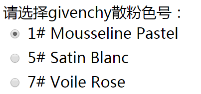
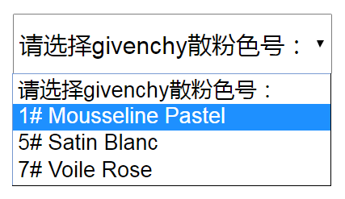
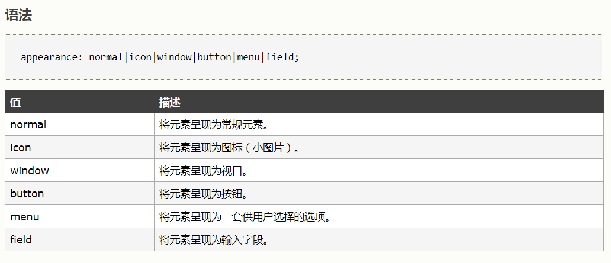

分享人：陈皓宇
目录
1.背景介绍
2.知识剖析
3.常见问题
4.解决方案
5.编码实战
6.扩展思考
7.参考文献
单选按钮（radio） && 下拉列表（select）
 一、form元素
form元素定义 HTML 表单,HTML 表单是一个包含表单元素的区域。 表单元素是允许用户在表单中输入内容,比如：文本输入、下拉列表、单选按钮、复选框等等。多数情况下被用到的表单标签是输入标签input。
二、radio
先介绍一下input元素，input元素是最重要的表单元素。 input元素在 form元素中使用，用来声明允许用户输入数据的 input 控件。 输入类型是由类型属性（type）定义的，输入类型至少包含23种，大多数经常被用到的输入类型如下： text（文本输入）、password（密码输入）、submit（提交按钮）、button（按钮）、image（图像作为提交按钮）以及checkbox（复选框）和今天的重点radio（单选按钮）。
三、label
label 标签为 input 元素定义标注（标记）。label 元素不会向用户呈现任何特殊效果。 "for" 属性可把 label 绑定到另外一个元素。只需把 "for" 属性的值设置为相关元素的 id 属性的值。看下demo
四、select
select标签用来创建下拉列表。select标签中的 option 标签定义了列表中的可用选项。
如何修改radio和select的默认样式
4.1 修改radio默认样式
appearance 属性，可以让元素看上去像标准的用户界面元素。看下demo
demo
4.2 修改select默认样式
demo
tip:
1、所有主流浏览器都不支持 appearance 属性。
2、Firefox 支持替代的 -moz-appearance 属性。
3、Safari 和 Chrome 支持替代的
-webkit-appearance 属性。
清除默认样式？——权重
关于权重
权重问题：怎么确定计算权重？
权重记忆口诀。从0开始，一个行内样式+1000（就是比如标签后+style=“xxxx”），一个id+100，一个属性选择器/class或者伪类+10，一个元素名，或者伪元素+1.
参考二：关于CSS的权重
感谢大家观看
BY : 陈皓宇